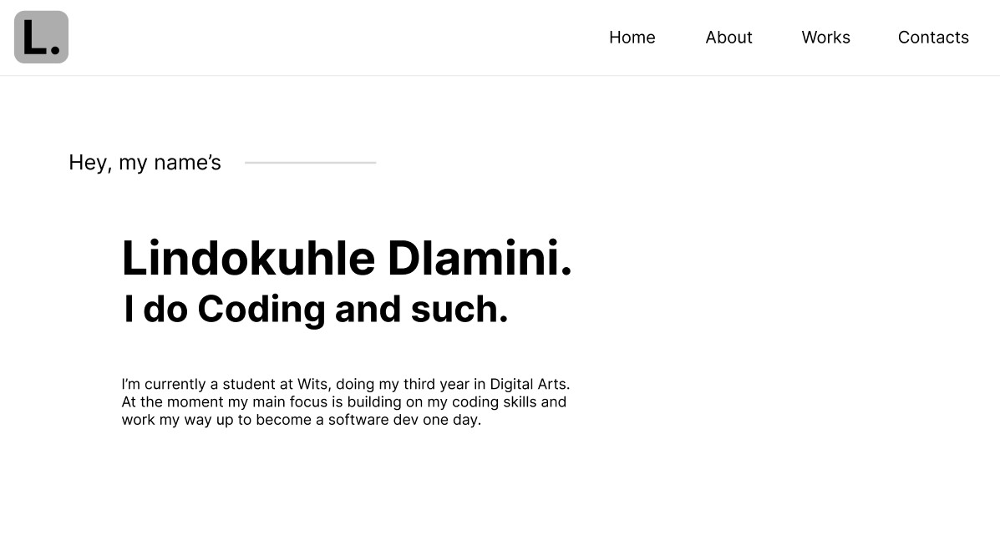
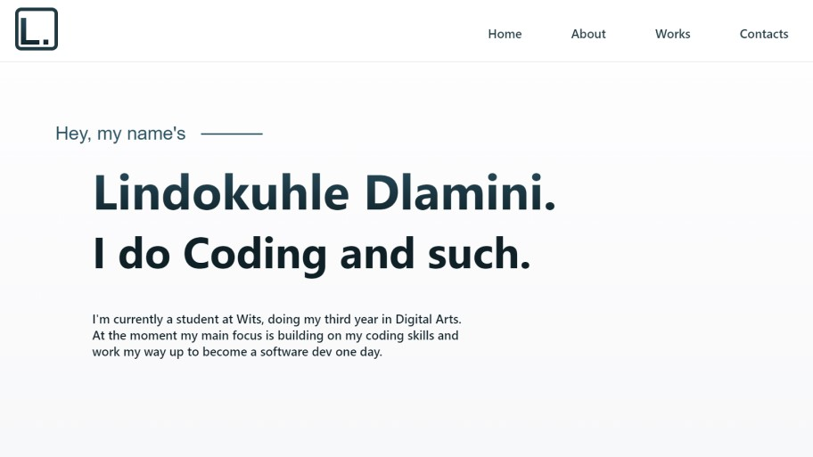
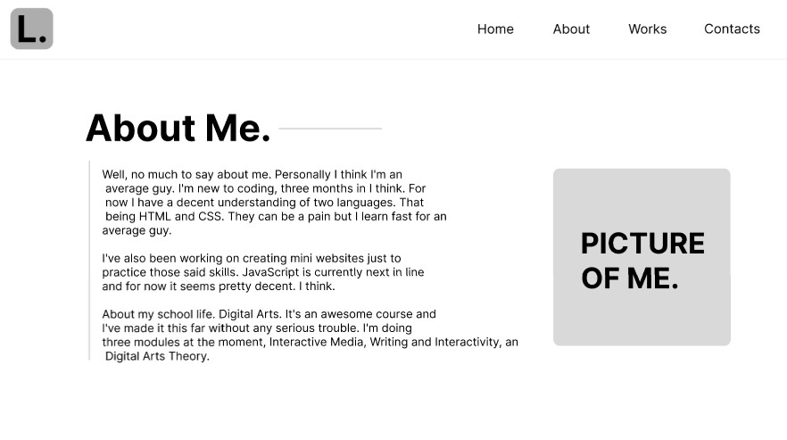
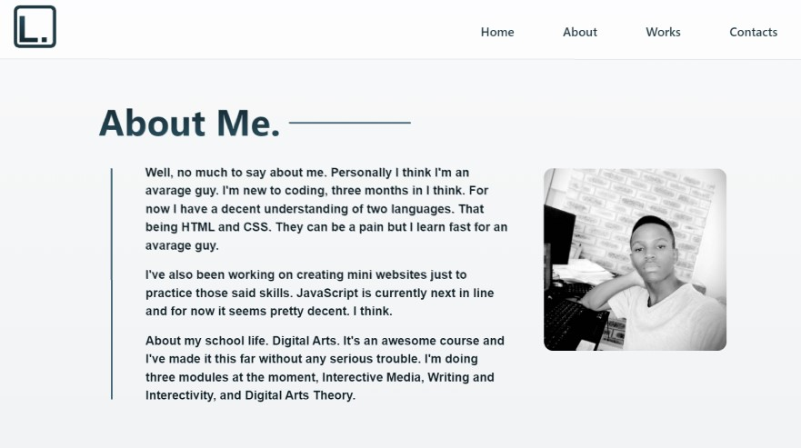
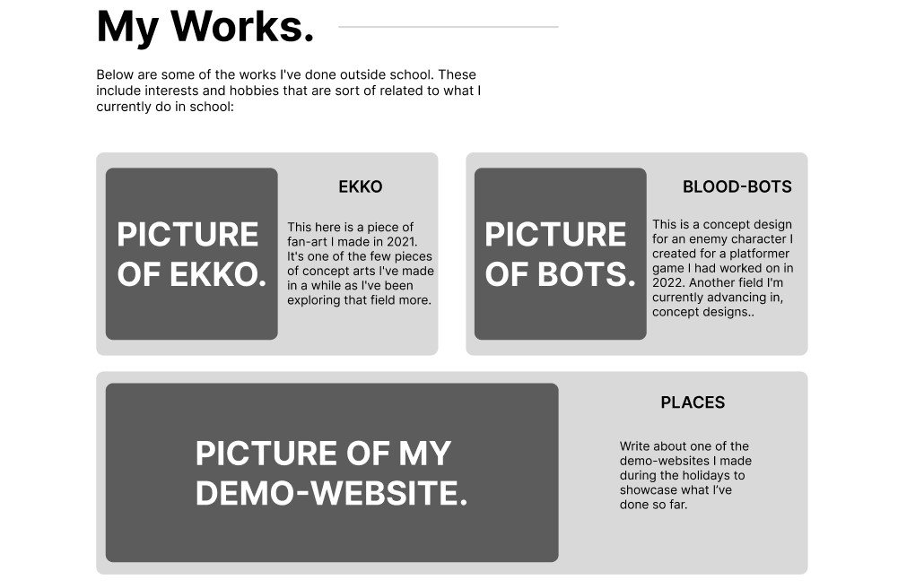
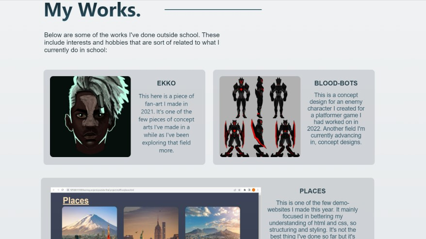
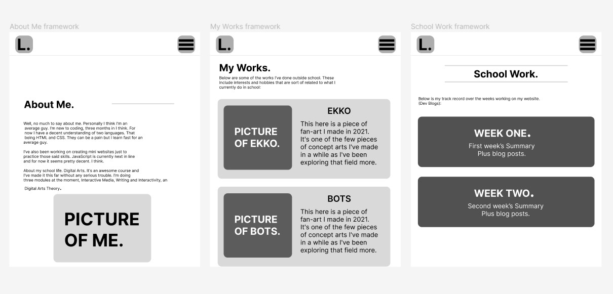
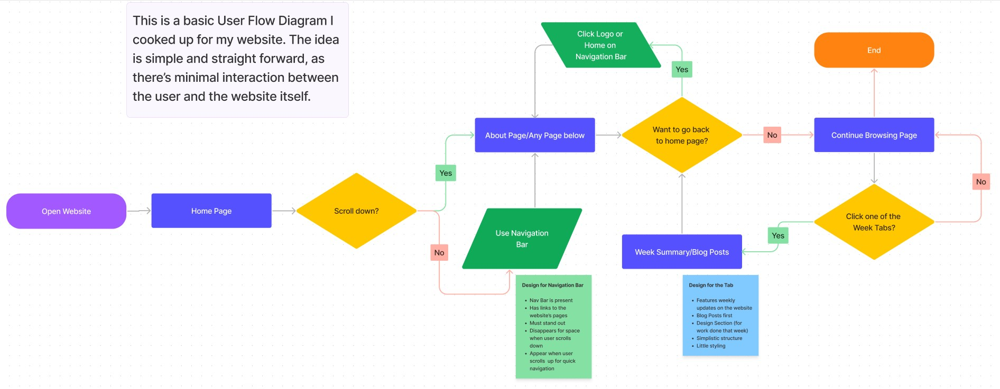

Wire Frames
Below are some of the works I've done outside school. These include interests and hobbies that are sort of related to what I currently do in school:
Homepage

DEMO

FINAL
This is the final design for my website. I chose to adopt the base minimalistic style so that I don't distract of overwhelme the user from the beginning. The top navigation bar is interactive and save the user time to scroll all the way down to a section they want to see or all the way up to the home page again. The logo, I had to code that because I had this idea in the beginning of keeping most of my content code if it is something interactive.
I chose to keep my introduction short but direct as well, after my name being a basic outline of who I am and what my goals are in relation to my website and course.
About Page

DEMO

FINAL
This is the final design for my About section. I chose to follow through with my demo or draft design about by leaving everything as is and code the entire thing, and it worked. There was a challenge though here, those two line had their own divs I found hard to manuever and control but I was able to do it. They serve as walls, in a way. As this information is separate from the rest
What I mean by this is that I'm shielding information about me as the developer since it has nothing (much) to do with the other designs (in terms or relation). I also chose to put the my picture right next to my about information so people can see my average looking face and marvel at how average looking I am.
My Work Page

DEMO

FINAL
This is the final design for my work section (portfolio sort of). I also chose to follow through with my demo here too and code things as they looked in the demo. Which proved to be difficult. My previous design did not satisfy me because I needed something compact and to the point, also it has to be easier for users to navigate across it and so I chose this. It showcases my two prime skills (which need more work), and gives a brief overview of the work I have done.
I did not want to put all my work on a separate page (my portfolio) because of time, also that would mean I would have to put in more artwork and web design work which there is little of for now. And since the website is focused more on school work too, I had to keep this section short, compact and brief.
Responsiveness

Responsiveness
Above is are the responsive design sections for my website. They're the only parts on the website that change depending on the scale or size of the viewport/screen. I mainly focused on making the content into columns so that it's easier to fit on a smaller screen.
User Flow Diagram
